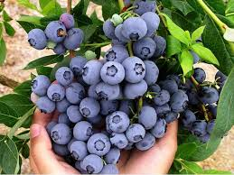

Borówka amerykańska, inaczej też określana jako borówka wysoka, to coraz chętniej uprawiany krzew,
dający bardzo smaczne i pełne walorów odżywczych owoce. Nie w każdym ogrodzie jednak borówki rosną dobrze.
Zobacz jak wygląda uprawa borówki amerykańskiej na działce, kiedy jest najlepszy czas na sadzenie borówek,
a także jak wygląda pielęgnacja borówki w kolejnych latach uprawy.